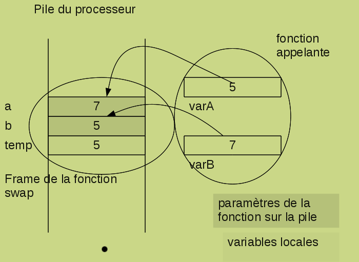
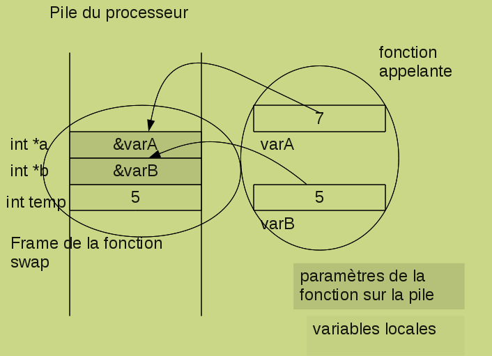

Langage C
Les fonctions
Les fonctions
Introduction
Une fonction, est une sous-routine, un morceau de programme qui s'exécute indépendemment du déroulement de l'application principale. L'intérêt d'utiliser des fonctions dans les programmes réside dans la simplification du code de l'application liée à l'isolement en parties distinctes, fonctionnelles de certains traitements. Un autre avantage induit par l'utilisation de fonctions est la réutilisation du code à plusieurs endroits de l'application et même dans différents programmes. De plus, les fonctions peuvent cacher des détails d'implémentation et de cette façon clarifier le déroulement principal de l'application.
Pour créer des fonctions dans un programme C, il est nécessaire d'une part d'en déclarer le prototype en début de fichier et d'autre part de les définir en fin de fichier, après la fonction main.
Attention, en C il n'est pas possible d'imbriquer une fonction dans une autre pour en restreindre l'usage.
La déclaration des fonctions
Le prototype d'une fonction se déclare toujours en début de fichier, soit dans un fichier d'include, soit directement dans le fichier source. Cette déclaration permet de renseigner le compilateur sur les caractéristiques de la fonction : la liste des paramètres, en donnant leur type, et le type de la fonction, c-à-d le type de la valeur de retour. Par exemple la déclaration suivante
int fct(int, char);
annonce au compilateur que fct est une fonction de type int, c-à-d qu'elle retourne une valeur int et qu'elle utilise 2 paramètres, le premier de type int et le deuxième de type char.
Une fonction qui n'utilise aucun paramètre sera éventuellement déclarée avec une liste de paramètres valant void. Tandis qu'une fonction qui accepte un nombre variable de paramètres pourra spécifier une liste indéterminée de paramètres
int fct (param1, param2, ...);
Par défaut, si une fonction n'est pas déclarée, cette fonction sera considérée par le compilateur de type int, ce qui pourra conduire à des incompatibilités.
La définition des fonctions
Outre la liste des paramètres ainsi que son type, la définition d'une fonction reprend le code de la fonction. Le code est en fait un bloc d'instructions, placé entre les caractères { et }.
Les fonctions sont définies de manière indépendante, c-à-d qu'il n'est pas permis d'imbriquer une fonction à l'intérieur d'une autre fonction. Elles sont toujours définies après la fonction mail.
Les paramètres des fonctions
Les paramètres de la fonction sont des variables locales à la fonction qui reçoivent une valeur d'initialisation provenant du programme appelant.
Comme vous l'avez vu au cours de langage d'assemblage, lors de l'appel de la fonction,
les paramètres sont copiés sur la pile du processeur; à la fin de la fonction, les données de la fonction sont effacées de la pile avec comme conséquence que les paramètres sont perdus.
On dit que le passage des paramètres en C se fait par valeur, le paramètre reçoit une valeur mais ne retourne aucun résultat au sortir de la fonction.
L'exemple suivant illustre ce mécanisme.
La fonction swap doit permutter le contenu de 2 variables.
La première version de cette fonction :
void swap(int a, int b){ /* fonction qui échange le contenu de 2 variables */
int temp = a;
a = b;
b = temp;
}
ne fonctionne pas. L'appel de cette fonction
swap(varA, varB);
ne produit aucun résultat car les valeurs permutées sont dans les paramètres a et b et pas dans les variables varA et varB, le changement intervenu durant le déroulement de la fonction reste local. A la fin de la fonction, les données locales sont perdues.

Or, il est fréquent qu'une fonction doive retourner plus d'une valeur et donc il est nécessaire qu'elle puisse utiliser des paramètres in-out.
En C, puisque les paramètres sont passés par valeur, il faut utiliser comme paramètres les adresses des variables qui doivent être modifiées dans la fonction. Les paramètres doivent dès lors être des pointeurs. Nous pouvons donc réécrire la fonction swap de la sorte, en utilisant des pointeurs
void swap(int *a, int *b){ /* fonction qui échange valablement le contenu de 2 variables */
int temp = *a;
*a = *b;
*b = temp;
}
L'appel de cette fonction
swap(&varA, &varB);
va produire le résultat attendu. En effet, si les adresses des variables varA et varB ne changent pas, le contenu lui a bien été modifié grâce à l'utilisation des pointeurs.

Les tableaux sont convertis en pointeurs par le compilateur. Donc le contenu des tableaux utilisés en argument est modifié par la fonction. Toutefois, il est possible de s'en prémunir en les qualifiant de const.
int initialiserTable(int *t, int taille){
int i;
for (i =0; i<taille; i++){
t[i]=i;
}
return taille;
}
Le type de la fonction
Une fonction peut soit retourner une valeur à la fonction appelante, attention pas de tableau, soit ne rien retourner; dans ce cascertains langages les appellent procédures, elle sera dite de type void.
void itoa(int a){
printf("%d");
return;
}
La valeur est renvoyée par la fonction grâce à l'instruction return expr où expr est une expression qu'il est préférable de placer entre ( et ). Par exemple,
double sum(double a, double b){
return (a+b);
}
Si nécessaire, une conversion d'affectation sera effectuée pour adapter le type de l'expression au type de la fonction.
int cube(int a){
double res = pow(a, 3);
return res;
}
Dans cet exemple, la fonction cube convertit le résultat de type double en une valeur de type int.
De même une conversion d'affectation peut être réalisée lors de la récupération du résultat de la fonction.
double racine(int a){
double res = pow(a, 1.0/3);
return res;
}
...
int i = 27, j;
printf("la racine cubique de %d est %d \n" i, j=racine3(i);
Attention, C n'exige pas d'intruction return mais le résultat peut être inapproprié si elle est omise, comme dans l'exemple suivant :
int div(int a, int b){
if (b != 0){
return (a/b);
}
}
Ni à la compilation, ni lors de l'exécution, n'apparaitra un message indiquant un problème lorsque le second paramètre est nul.
Les variables des fonctions
Les fonctions utilisent différentes sortes de variables pour conserver des données durant la vie de la fonction : les variables locales, les variables statiques, les paramètres.Elles peuvent, si nécessaire, accéder aux variables externes.
Les variables locales
Une variable locale automatique (la classification par défaut des variables locales) est une variable dont le rayon d'action est limité à la fonction où elle est déclarée. Elle est créée sur la pile du processeur à chaque appel de la fonction et détruite lorsque la fonction se termine. Elle permet de stocker des données qui ne doivent vivre que durant l'exécution de la fonction.
Les variables statiques
Par contre, une variable locale statique est une variable locale à la fonction, elle ne peut pas être utilisée en dehors de la fonction, mais sa durée de vie est liée à la durée de vie de l'application, elle n'est pas stockée sur la pile du processeur mais dans un segment de mémoire spécifique : elle ne disparaît que lorsque l'application se termine. Elle permet donc de garder l'information qu'elle mémorise d'un appel de fonction à l'autre. Un exemple de ce genre de variable est le pointeur utilisé dans la fonction strtok; à chaque appel de la fonction, il continue le traitement de la chaîne initiale à partir de l'endroit mémorisé lors de l'appel précédent.
Voici un autre exemple dans lequel on accumule, dans une variable statique, les valeurs reçues en argument.
#includeint ajouter(int i); int main (int argc, char **argv){ char ligne[80]; while (fgets(ligne, 80, stdin)){ int n = atoi(ligne); printf("%d\n", ajouter(n)); } } int ajouter(int i){ static int somme = 0; return (somme+=i); }
Les variables externes
Une variable externe est une variable déclarée en dehors d'une fonction, accessible à partir de n'importe quelle fonction.
Bernard Henriet © 2015